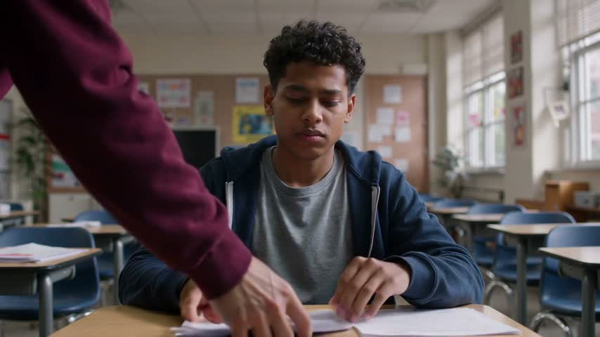
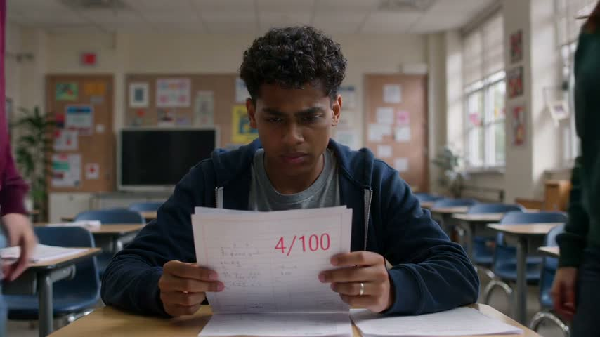
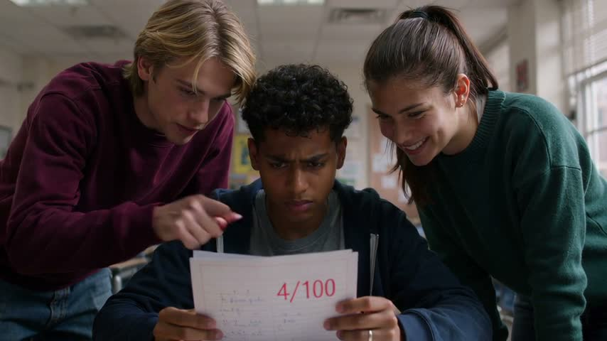
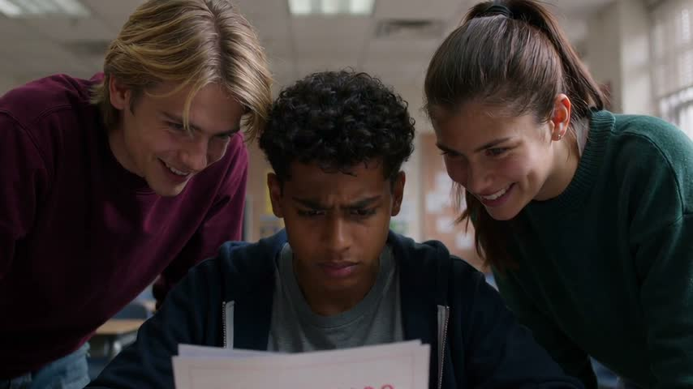
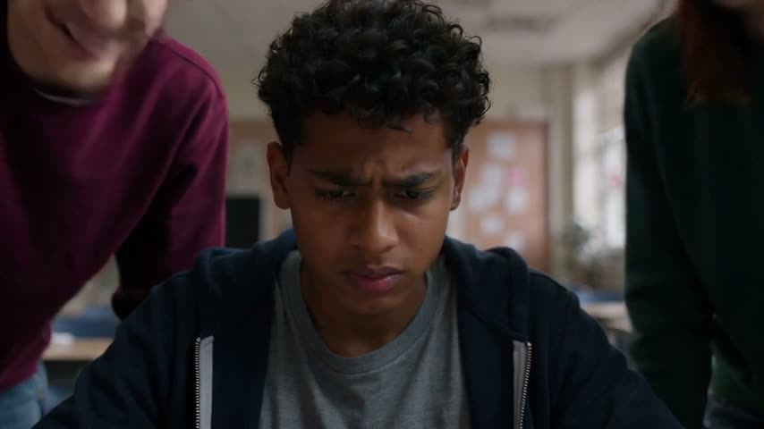
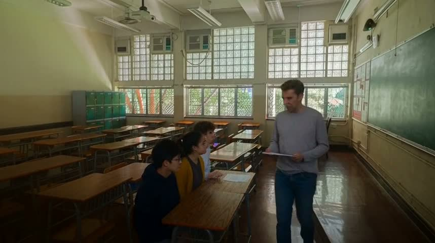
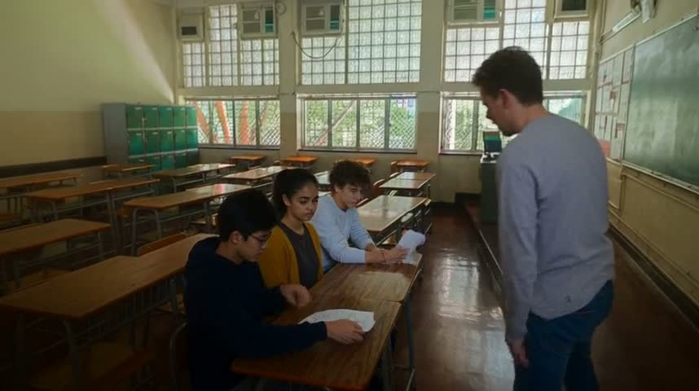
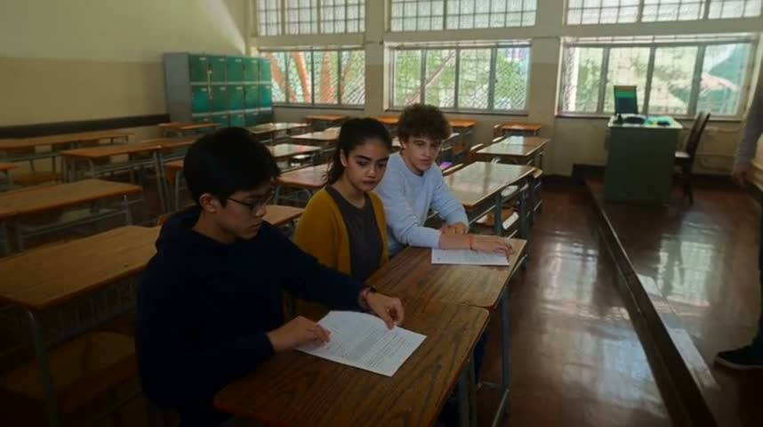
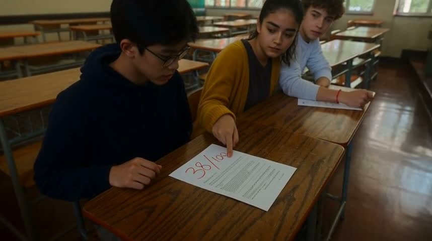
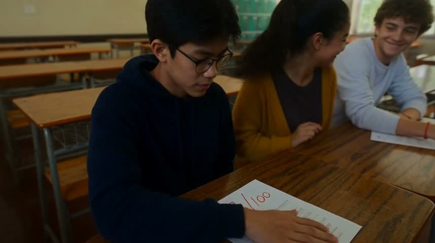

Text only
ltx-2.5 · 15 s · 360 credits · no references · faces and room from description





prompt (1135 chars)
A realistic cinematic short-film scene, 15 seconds, widescreen. Set in an ordinary contemporary high-school classroom, sensitive and understated coming-of-age drama. Main character: a 17-year-old male student with short dark curly hair, medium brown skin, navy zip hoodie over a plain gray T-shirt. The same two classmates throughout the story: a boy with straight blond hair in a burgundy sweatshirt and a girl with a dark ponytail in a forest-green sweater, seated at the adjacent desk. 0–5 seconds: medium shot as a teacher's hand returns a graded math test face up to the main student at his desk. Brief insert of the top of the paper showing a large red '42/100'. 5–11 seconds: the two classmates lean over, see the low score, exchange mocking smirks; the blond boy points at the paper and both silently chuckle. 11–15 seconds: close-up of the main student looking down, hurt but restrained, then drawing the paper toward himself. Natural daylight, muted colors, subtle film grain, eye-level camera with a gentle push-in, believable acting. No dialogue, no subtitles, no watermarks. Keep the bullying mild, no physical aggression.
Five references
minimax-h3 · 15 s · 360 credits · @TEACHER @EVAN @MAYA @LEO @CLASSROOM
given:







prompt (2241 chars)
Create one continuous 15-second live-action cinematic shot, landscape 16:9, entirely silent, no dialogue, no subtitles, no music. Use all five supplied references faithfully. @TEACHER is exclusively the teacher: preserve this man's face, short curly brown hair, grey long-sleeve shirt and jeans. @EVAN is exclusively Evan: preserve his face, black hair, round black glasses and navy hoodie. @MAYA is exclusively Maya: preserve her face, dark ponytail, mustard cardigan and charcoal shirt. @LEO is exclusively Leo: preserve his face, curly brown hair and light grey sweatshirt. Do not exchange identities or outfits; maintain their reference likenesses throughout. The location must be @CLASSROOM, not a generic room: preserve its rows of narrow brown wooden desks with metal frames, large grid windows, green chalkboard on the right wall, green lockers on the left, pale walls and ceiling fixtures. Natural morning light streams through the reference windows. Evan sits at a near desk, Maya at the adjacent next desk, Leo close beside Maya; teacher walks in the aisle. Frame from an elevated three-quarter aisle angle so faces, gestures and the test surface are visible. Slow gentle camera push, no cuts. Precisely ordered restrained dramatic action: 0-4 seconds teacher walks along the desk row and hands Evan one returned test face down. 4-7 seconds Evan turns the paper face up on his desk, revealing the large clearly legible red handwritten score '38/100' near its top, oriented toward camera; hold the score visibly unobstructed. 7-10 seconds Maya leans from the next desk and points directly at that score. 10-12 seconds Leo looks at the score, smirks, and gently nudges Maya with his elbow; Maya covers her mocking grin with one hand. 12-15 seconds Evan lowers his eyes in embarrassment and pulls the paper closer to himself; his hand moves over and covers the score completely by the final frame. Finish on Evan's lowered gaze and hand covering the paper, with classmates still visible. Quietly uncomfortable tone, subtle believable performances, no exaggerated laughter, no speaking, realistic anatomy and coherent hand-paper interactions. Exactly four main characters. Preserve classroom architecture and all character identities.